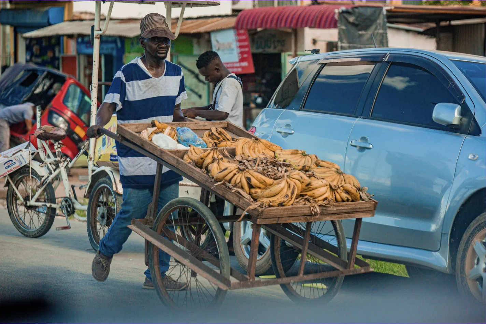
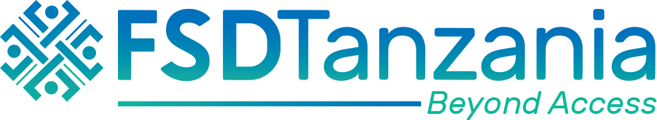
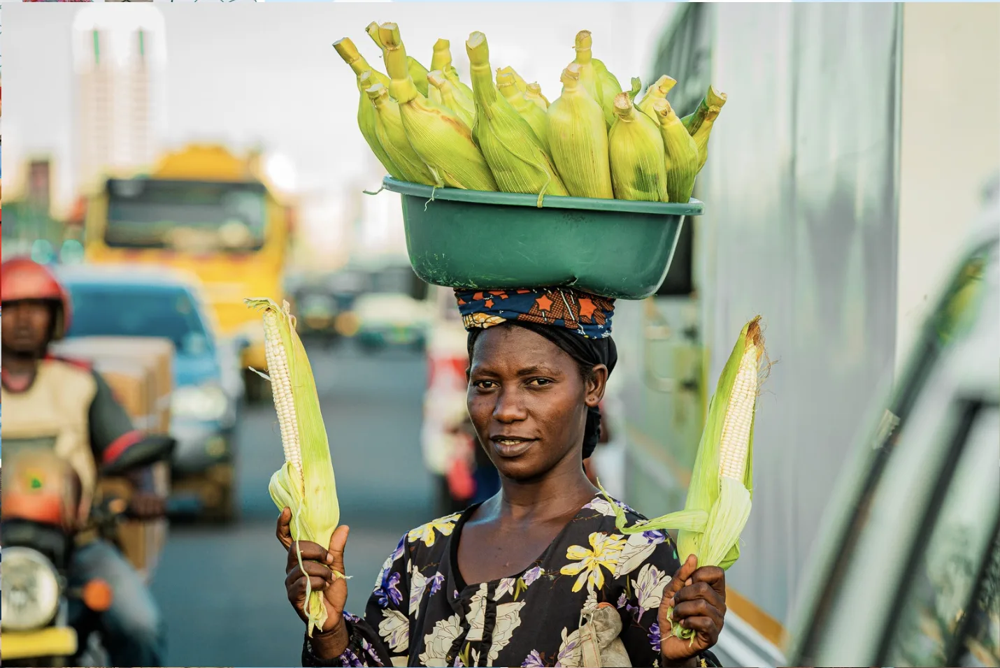
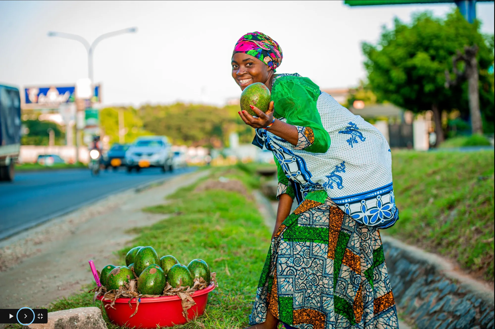

A public communications campaign for FSDT Tanzania amplifying the voices of machinga street vendors, shining a light on their economic contribution, and pushing their agenda into Tanzania's 2022/2023 national budget conversation.

CLIENT
FSDT Tanzania ↗OUR ROLE
Social Media Campaign & Content Production
AUDIENCE
Machinga & General Public
LOCATION
Tanzania (Digital / Social)
Machinga, Tanzania's street vendors, are one of the most visible parts of urban economic life, yet they remain largely invisible in policy and public discourse. Despite operating in every city and trading everything from food to clothing and electronics, their pain points, needs, and economic contribution went largely unaddressed.
FSDT Tanzania needed a campaign that could shift that narrative publicly and with enough momentum to influence the 2022/2023 national budget reading. The goal was not just awareness: it was a seat at the policy table.
We put machinga faces, names, and stories at the centre of the campaign. Rather than speaking about them, we built content that let them speak for themselves, highlighting the real daily pressures they face and the genuine economic value they create.
We produced and deployed a range of content formats across social media: static posters, comic strips, videos, GIFs, and Story Kijiweni. Each format served a different role: some drove reach, some sparked dialogue, and others educated audiences on the challenges machinga face and what can be done.
The campaign was not broadcast-only. We actively monitored feedback, engaged with responses, and shaped the public conversation in real time, turning a communications campaign into a live advocacy dialogue that built momentum heading into the budget cycle.
Street vendors are the backbone of Tanzania's urban informal economy.


Increased public understanding of who machinga are and the economic role they play in Tanzania's cities.
The machinga agenda was raised in the 2022/2023 national budget reading, a direct outcome of the campaign's public pressure.
The campaign sparked constructive dialogue online and offline around the challenges facing street vendors and how to address them.
Significant follower growth and increased engagement on FSDT's social media accounts throughout the campaign period.
Tell us your objective, audience, and timeline. We'll propose a field-ready communications strategy built around real people and real outcomes.